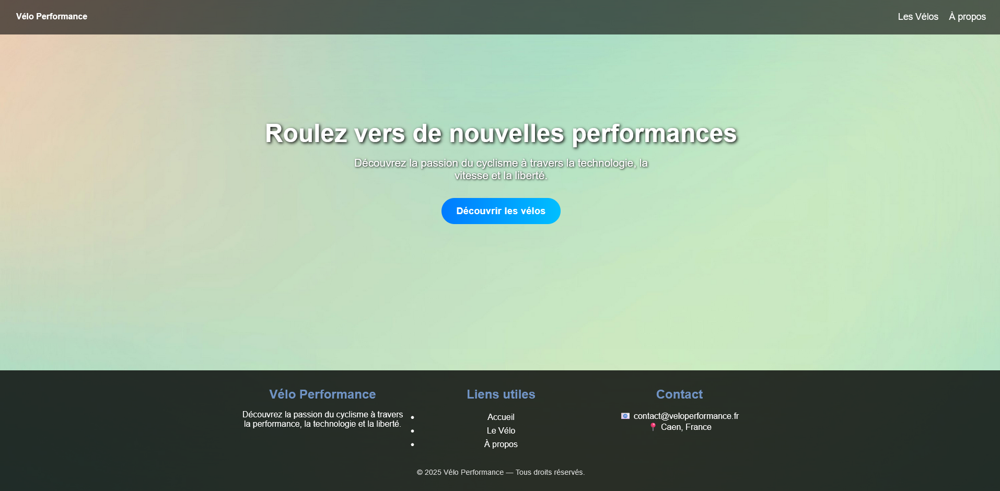
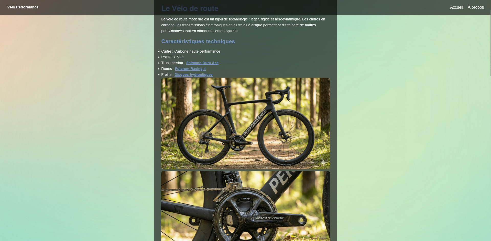
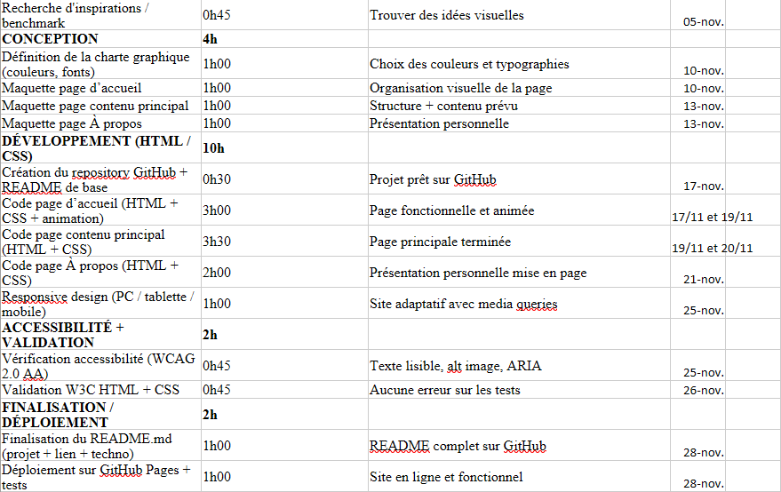
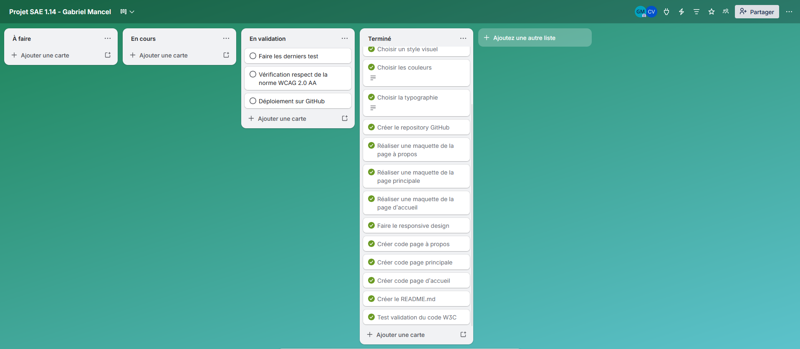

SAÉ 1.04 – Se présenter sur Internet
1. Contexte et Objectifs de la mission
Contexte professionnel : Dans le monde du numérique, la création de sites web est une compétence incontournable. Dans le cadre de cette SAÉ, nous devions concevoir et développer un site web multipages de A à Z, sans utiliser de CMS (comme WordPress), en codant directement en HTML et CSS, tout en appliquant une méthodologie de gestion de projet rigoureuse (R1.15).
Mission confiée : L'objectif était de réaliser un site de 3 pages minimum sur un thème de notre choix (j'ai choisi le cyclisme avec le projet "Vélo Performance"). Le site devait respecter un cahier des charges strict : design responsive (adaptatif sur mobile), respect des normes W3C, accessibilité WCAG 2.0 AA, et hébergement sur GitHub Pages. Le tout devait être planifié et suivi via des outils professionnels (WBS, Planning, Trello).
Compétences BUT ciblées : RT3 - Créer des outils et des applications informatiques pour les R&T.
2. Apprentissages Critiques (AC) mobilisés
Au cours de ce projet de développement web, j'ai particulièrement mis en œuvre les apprentissages suivants :
- AC 13.04 : Connaître l'architecture et les technologies d'un site Web.
→ Comment je l'ai mobilisé : En structurant sémantiquement mes pages en HTML5 et en utilisant CSS3 (Flexbox/Grid) pour créer une mise en page moderne, incluant des animations fluides. - AC 13.01 : Utiliser un système informatique et ses outils.
→ Comment je l'ai mobilisé : En utilisant le système de versioning Git pour sauvegarder mon code étape par étape et en déployant le projet publiquement sur GitHub Pages. - AC 13.06 : S'intégrer dans un environnement propice au développement et au travail collaboratif.
→ Comment je l'ai mobilisé : En planifiant le projet en amont avec un schéma WBS, un planning détaillé, et en suivant l'avancement de mes tâches de développement via l'outil Kanban Trello.
3. Tâches réalisées et Méthodologie
Pour mener à bien la création de "Vélo Performance", j'ai suivi les étapes de développement standard :
- Gestion de projet : Découpage des exigences en lots (WBS), estimation des temps de réalisation dans un planning, et suivi rigoureux via un tableau Trello (À faire, En cours, En validation, Terminé).
- Conception UI/UX : Définition de la charte graphique (couleurs, typographie) et création d'une arborescence cohérente (Accueil, Les Vélos, À propos).
- Développement Front-End : Écriture du code HTML pour le squelette et du CSS pour l'habillage. J'ai massivement utilisé Flexbox pour aligner les éléments de la barre de navigation et structurer le contenu des articles.
- Responsive & Accessibilité : Ajout de media queries pour que le site s'adapte aux smartphones et vérification des contrastes et des balises alternatives (alt) pour respecter la norme WCAG 2.0 AA.
- Mise en production : Validation W3C du code, rédaction d'un fichier README.md détaillé, et déploiement continu sur GitHub.
4. Preuves et Traces de réalisation
Lien vers le site hébergé : Visiter mon projet "Vélo Performance"
Trace 1 : Page d'accueil du site "Vélo Performance"
Description : Capture de la page d'accueil avec son message d'accroche, son bouton d'appel à l'action et son pied de page (footer).

Justification du choix : Cette trace démontre ma capacité à créer une interface utilisateur (UI) épurée et moderne. L'alignement du footer et du bouton central prouve ma maîtrise des outils de positionnement CSS comme Flexbox.
Trace 2 : Page de contenu détaillé
Description : Page présentant les caractéristiques techniques du vélo de route, intégrant des listes, du texte et des images haute qualité.

Justification du choix : J'ai choisi cette capture car elle valide l'exigence du cahier des charges demandant une page "riche en contenu". Elle montre la bonne structuration HTML de l'information (balises de listes, titres hiérarchisés) tout en conservant la charte graphique globale du site.
Trace 3 : Livrables de Gestion de Projet (R1.15)
Description : Découpage des tâches (WBS), planification temporelle et suivi Kanban (Trello) utilisés pour structurer le développement du site.



Justification du choix : Ces éléments prouvent que le site n'a pas été codé à l'aveugle. L'utilisation d'une méthode de gestion de projet garantit le respect des délais et du cahier des charges. La colonne "Terminé" de mon Trello prouve mon autonomie dans le suivi de mes tâches.
5. Autoévaluation et Démarche Réflexive
Difficultés rencontrées & Solutions apportées
L'une des plus grandes difficultés a été de rendre le site 100% "Responsive". Lors de mes premiers tests, le menu de navigation débordait sur les petits écrans de téléphone. Pour corriger cela, j'ai dû me documenter sur l'utilisation des Media Queries en CSS afin de modifier dynamiquement la disposition des éléments (passer d'un affichage horizontal à vertical) en fonction de la taille de l'écran.
Prise de recul (Bilan)
Développer un site en partant d'une page blanche m'a donné une immense satisfaction. J'ai pris conscience de la rigueur nécessaire pour coder proprement (fermeture des balises, indentation) afin de passer la validation W3C sans erreur. D'autre part, j'ai réalisé qu'une bonne heure passée à planifier (choix des couleurs, WBS, Trello) permet de gagner des dizaines d'heures lors du développement.
Capacité d'adaptation
La méthode de découpage fonctionnel (WBS) et la logique Agile/Kanban (Trello) sont des standards de l'industrie. Je pourrai réutiliser exactement la même méthodologie pour structurer le déploiement d'une infrastructure réseau complexe ou pour organiser le travail d'une équipe lors d'un futur audit de cybersécurité. De plus, la connaissance intime de l'architecture Front-End acquise ici me sera précieuse pour rechercher des failles web à l'avenir.